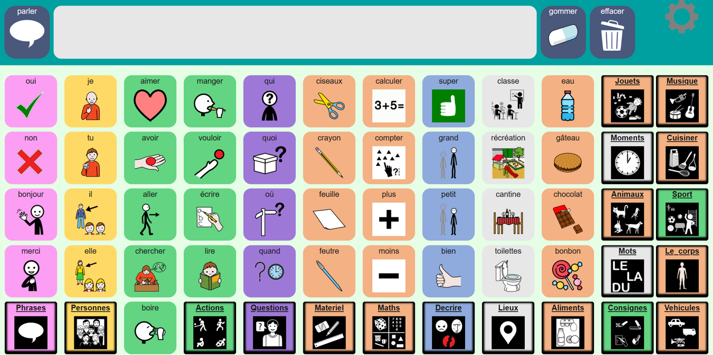

Les applications PAON
 CAArtable
CAArtable
Une application gratuite de Communication Alternative et Améliorée pour permettre aux élèves non verbaux de s’exprimer plus facilement.
Aperçu de l’application


Communiquer avec des supports personnalisés
CAArtable propose des profils personnalisables afin d’adapter les contenus et l’organisation aux besoins de chaque élève.
Deux voix sont disponibles pour oraliser les messages. L’application fonctionne hors ligne, sans dépendre d’une connexion Internet pendant son utilisation.
CAArtable est disponible pour Windows, les tablettes Android et les téléphones Android.
Téléchargements
Retrouvez ici les versions Windows, Android tablette et Android téléphone.
Les fichiers disponibles sont en cours de chargement.